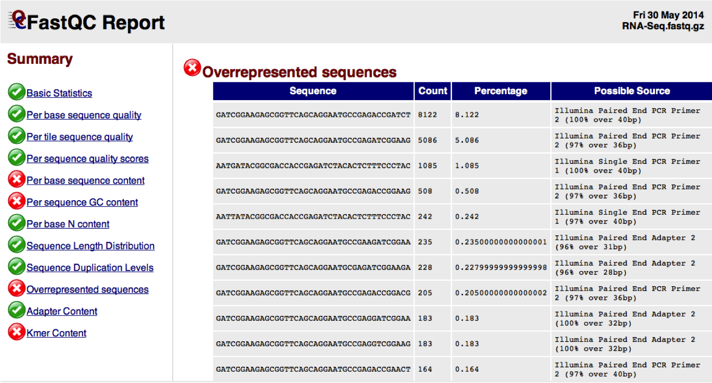
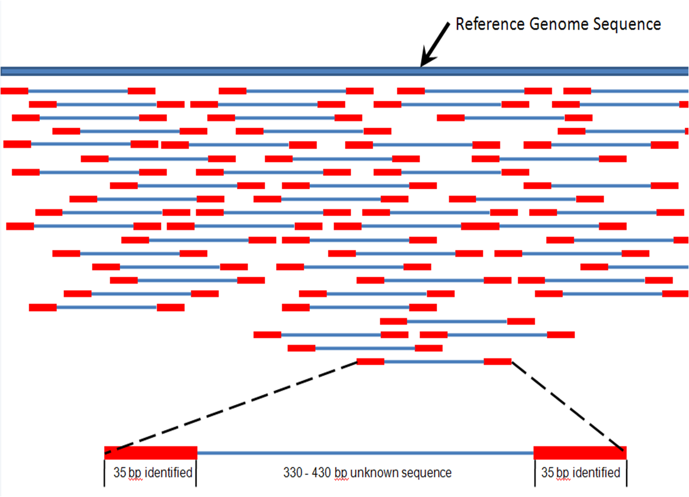
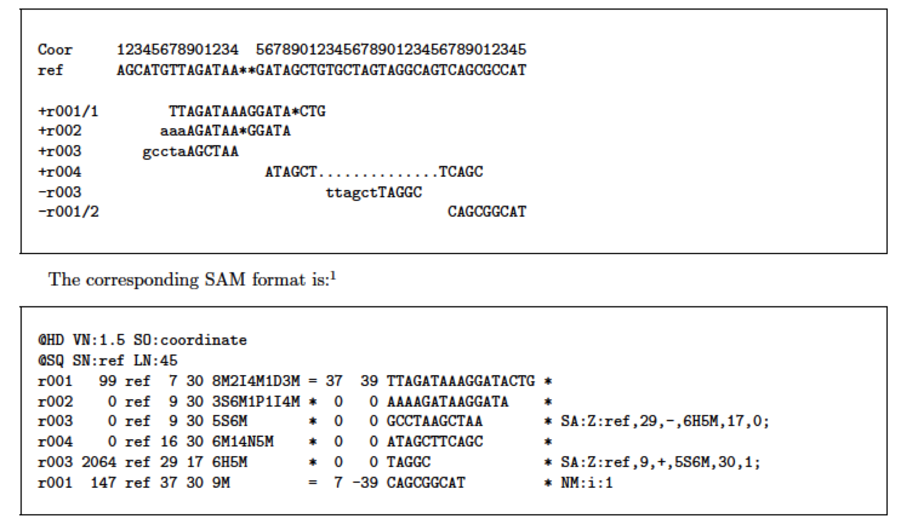
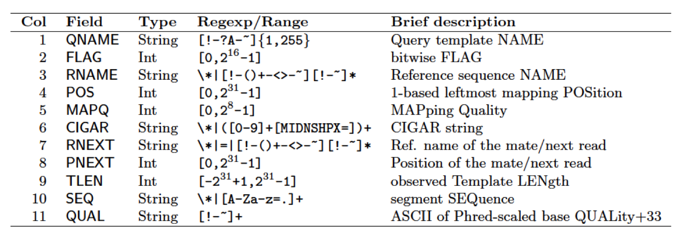
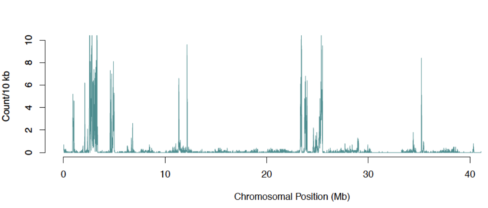

# Introduction to performing SNP calling Steps 1. Preprocess raw sequence reads (Focusing on Illumina technology) * Evaluate base quality (FastQC) * Test for adapter contamination (FastQC) * Trim reads for quality and length (Trimmomatic/sickle) 2. Read mapping and quality control * Align reads with mapping software * Convert and sort alignment files * Mark PCR duplicates * Tools: BWA, Samtools, Picard 3. SNP calling with the GATK Tutorial webpage: http://jinfengchen.github.io/Workshop/NGS_basic/SNP.html --- #Examples of low quality sequence <img src="images/Bad_quality_fq.png" height="500px" width="700px" /> http://www.bioinformatics.babraham.ac.uk/projects/fastqc --- #Example of high quality sequence <img src="images/Good_quality_fq.png" height="500px" width="700px" /> http://www.bioinformatics.babraham.ac.uk/projects/fastqc --- #Adapter contamination <img src="images/Adapter_comtamination.png" height="500px" width="700px" /> http://www.bioinformatics.babraham.ac.uk/projects/fastqc --- #Adapter sequence identified  http://www.bioinformatics.babraham.ac.uk/projects/fastqc --- # Quality control by FastQC Options: -o --outdir: directory for all output of fastqc run -f --format: format of files, fastq/bam/sam -c --contaminants: sequence file in the form name[tab]sequence ```shell $ module load fastqc $ fastqc -o ./ -f fastq -c adapter.fa read1.fastq read2.fastq $ ls read1.fastq_* read_1.fq_fastqc.zip read_1.fq_fastqc: Icons Images fastqc_data.txt fastqc_report.html summary.txt ``` --- #Filter raw reads by Trimmomatic: Trimmomatic can deal with adapter comtamination and low quality SLIDINGWINDOW:4:15, Scan the read with a 4 bp sliding window cutting when the average quality per base drops below 15 ILLUMINACLIP:adapter.fa:2:40:15, Cut adapter sequences from the read MINLEN:40, Drop the read if it is below a specified length ```bash $ java -classpath trimmomatic-0.30.jar org.usadellab.trimmomatic.TrimmomaticPE \ -phred33 read1.fastq read2.fastq read1.trim.fq read1.trim.unpaired.fq \ read2.trim.fq read2.trim.unpaired.fq \ SLIDINGWINDOW:4:15 ILLUMINACLIP:adapter.fa:2:40:15 MINLEN:40 ``` --- # Filter raw reads by Sickle Sickle can deal with low quality Options: -f, --pe-file1: forward reads fastq file -r, --pe-file2: reverse reads fastq file -o, --output-pe1: trimmed forward fastq file -p, --output-pe2: trimmed reverse fastq file -s, --output-single: trimmed unpaired fastq file -q, --qual-threshold: threshold for trimming -l, --length-threshold: threshold for read length after trimming ```shell $ module load sickle $ sickle pe -f read1.fastq -r read2.fastq -o read1.trim.fq -p read2.trim.fq \ -s read.unpaired.trim.fq -t sanger -q 20 -l 50 ``` --- #Challenges with paired-end reads * How to deal with trimming/filtering with paired-end data - trim low quality base/adapter sequence/read length in each single read file - keep these reads with both reads passed trimming/filtering in paired-end fastq files * How to use the paired-end information in reads mapping - map each reads seperately and keep all mapped coordinates in the genome - identify corrdinates that best for both pairs (mapping quality score)  https://en.wikipedia.org/wiki/DNA_nanoball_sequencing --- The GATK Best Practices workflows for SNP/INDEL calling <img src="images/BP_workflow_3s.png" height="400px" width="600px" /> [Best Practices GATK](https://www.broadinstitute.org/gatk/guide/topic?name=tutorials) --- # Read mapping using BWA mapping with bwa aln, short reads (less than 100 bp) and high accurate reads ```shell $ module load bwa $ bwa index ref.fa $ bwa aln ref.fa read1.fq > aln1.sai $ bwa aln ref.fa read2.fq > aln2.sai $ bwa sampe ref.fa aln1.sai aln2.sai read1.fq read2.fq > aln.sam ``` mapping with bwa mem, long reads (70bp-1Mb) and higher error rate reads ```shell $ bwa mem ref.fa read1.fq read2.fq > aln.sam ``` --- # SAM/BAM format __S__equence __A__lignment/__M__apping format. * Storing alignments as BLAST format is not efficient, short read data needed a simpler and more compact format. * [SAM specification](https://samtools.github.io/hts-specs/SAMv1.pdf) * BAM is a compressed and binary version of SAM, but they contain same information. * Files can be unsorted, sorted by read name, or sorted by genomic location --- # Example of SAM format  https://samtools.github.io/hts-specs/SAMv1.pdf --- # Explain SAM format  https://samtools.github.io/hts-specs/SAMv1.pdf --- # Explain sorting * samtools view Options: -b, output bam format file -S, input is sam format -o, output filename * samtools sort INPUT OUTPUT_PREFIX sorting ```shell $ module load samtools $ samtools view -bS -o aln.raw.bam aln.sam $ samtools sort aln.raw.bam aln.sort ``` --- # Mark Duplicate read pairs These can be created by PCR artifacts. We know they are duplicates because the forward and reverse sequences match another pair perfectly which are also are same forward and reverse. ```bash $ java -jar MarkDuplicates.jar \ ASSUME_SORTED=TRUE \ REMOVE_DUPLICATES=TRUE \ VALIDATION_STRINGENCY=LENIENT \ INPUT=aln.sort.bam \ OUTPUT=aln.bam \ METRICS_FILE=aln.dupli ``` --- # Add ReadGroup tags ReadGroups are for labeling the samples with information about the source and procedures that generated the sequence. * RGID = ReadGroup ID - the Unique ID of the Sample isolate * RGLB = ReadGroup Library - the name of library (eg. 200bp, RNA) * RGPL = ReadGroup Platform (e.g. illumina, solid) * RGPU = ReadGroup Platform Unit (eg. run barcode) * RGSM = ReadGroup Sample - the Sample name ```shell $ java -jar AddOrReplaceReadGroups.jar \ INPUT=aln.bam \ OUTPUT=aln.rg.bam \ SORT_ORDER=coordinate \ CREATE_INDEX=true \ RGID=Rice01 \ RGLB=Rice3k \ RGPL=Illumina \ RGPU=ATGGGC \ RGSM=Rice VALIDATION_STRINGENCY=SILENT ``` --- # Quality control & stats on alignment (BAM) file Options: -bam, input bam file -nt, number of threads -outformat, output file format of summary report --java-mem-size=2G, maximum memory for java ```shell qualimap bamqc -bam aln.rg.bam --java-mem-size=2G -nt 1 -outformat PDF ``` --- # Overview of summary stats of bam file <img src="images/screenshot_bamqc_summary.png" height="400px" width="600px" /> http://qualimap.bioinfo.cipf.es --- # Text version of the summary stats ```shell $ samtools flagstat aln.bam 391506 + 0 in total (QC-passed reads + QC-failed reads) 0 + 0 duplicates 389349 + 0 mapped (99.45%:-nan%) 391506 + 0 paired in sequencing 195721 + 0 read1 195785 + 0 read2 385498 + 0 properly paired (98.47%:-nan%) 387340 + 0 with itself and mate mapped 2009 + 0 singletons (0.51%:-nan%) 0 + 0 with mate mapped to a different chr 0 + 0 with mate mapped to a different chr (mapQ>=5) ``` --- # Call SNPs using GATK toolkit The Genome Analysis Toolkit (GATK) is a software package for analysis of high-throughput sequencing data. The toolkit offers a wide variety of tools, with a primary focus on variant discovery and genotyping as well as strong emphasis on data quality assurance. GATK Options: -T, name of tool to use -R, reference genome, need to have *.dict -I, input bam file -o, output filename -nct, number of thread --- # Run SNP/INDEL calling with GATK HaplotypeCaller HaplotypeCaller Option: --genotypeing_mode, Specifies how to determine the alternate alleles to use for genotyping -stand_call_conf, The minimum phred-scaled confidence threshold at which variants should be called -stand_emit_conf, The minimum phred-scaled confidence threshold at which variants should be emitted ```shell $ java -Xmx1g -jar GenomeAnalysisTK.jar \ -T HaplotypeCaller \ -R $genome \ -I $BAM \ -o $prefix.gatk.raw.vcf \ -nct $cpu \ --genotyping_mode DISCOVERY \ -stand_call_conf 30 \ -stand_emit_conf 10 ``` --- # Extract SNP and INDEL from raw variant calls ```shell $ java -Xmx1g -jar GenomeAnalysisTK.jar \ -T SelectVariants \ -R $genome \ -V $prefix.gatk.raw.vcf \ -selectType SNP \ -o $prefix.gatk.snp.raw.vcf $ java -Xmx1g -jar GenomeAnalysisTK.jar \ -T SelectVariants \ -R $genome \ -V $prefix.gatk.raw.vcf \ -selectType INDEL \ -o $prefix.gatk.indel.raw.vcf ``` --- # Filter low quality SNP by hardfilter Options: -V, input varient VCF file --filterExpression, One or more expression used with INFO fields to filter QualByDepth (QD), the variant confidence (from the QUAL field) divided by the unfiltered depth of non-reference samples FisherStrand (FS), Phred-scaled p-value using Fisher's Exact Test to detect strand bias RMSMappingQuality (MQ), the Root Mean Square of the mapping quality of the reads across all samples MappingQualityRankSumTest (MQRankSum), the Mann-Whitney Rank Sum Test for mapping qualities between reads with ref bases vs. those with the alternate allele. ReadPosRankSumTest (ReadPosRankSum), the Mann-Whitney Rank Sum Test for the distance from the end of the read for reads with the alternate allele. --filterName, Names to use for the list of filters --- # Run hardfilter ```shell $ java -Xmx1g -jar GenomeAnalysisTK.jar \ -T VariantFiltration \ -R $genome \ -V $prefix.gatk.snp.raw.vcf \ --filterExpression "QD < 2.0 || FS > 60.0 || MQ < 40.0 \ || MQRankSum < -12.5 || ReadPosRankSum < -8.0" \ --filterName my_snp_filter \ -o $prefix.gatk.snp.hardfilter.vcf \ ``` --- # Filter SNP overlapping with repeat sequence Options: --mask, Any variant which overlaps entries from the provided mask rod will be filtered BED, VCF --maskName, The text to put in the FILTER field if a 'mask' rod is provided ```shell $ java -Xmx1g -jar GenomeAnalysisTK.jar \ -T VariantFiltration \ -R $genome \ -V $prefix.gatk.snp.pass.vcf \ -o $prefix.gatk.snp.pass.repeat.vcf \ --mask $repeat \ --maskName "REPEAT" ``` Alternative approach for filter SNP with bedtools ```shell bedtools intersect -a $prefix.gatk.snp.pass.vcf -b $repeat -v \ > $prefix.gatk.snp.pass.repeat.vcf bedtools window -w 100 -a $prefix.gatk.snp.pass.vcf -b $repeat -v \ > $prefix.gatk.snp.pass.repeat.vcf ``` --- # Compare the results from different VCF files ```shell $ module load vcftools $ bgzip ALL.gatk.snp.1.vcf $ tabix -p vcf ALL.gatk.snp.1.vcf.gz $ vcf-compare ALL.gatk.snp.raw.vcf.gz ALL.gatk.snp.1.vcf.gz ALL.gatk.snp.2.vcf.gz ``` ```shell 7 ALL.gatk.snp.1.vcf.gz (1.3%) ALL.gatk.snp.raw.vcf.gz (1.3%) 9 ALL.gatk.snp.2.vcf.gz (1.7%) ALL.gatk.snp.raw.vcf.gz (1.7%) 527 ALL.gatk.snp.1.vcf.gz (98.7%) ALL.gatk.snp.2.vcf.gz (98.3%) \ ALL.gatk.snp.raw.vcf.gz (97.1%) ``` --- # SNP density along chromosome We want to investigate whether the SNPs were equally distributed along chromosomes or they showed any signature of enrichment in speicfic regions ```shell module load vcfools vcftools --vcf dbSNP.vcf --out testing_vcf --SNPdensity 10000 cat testing_density.R | R --slave ``` testing_vcf.snpden.pdf  --- # From SNP to phylogeny * convert vcf to tab format * convert tab to alignment in fasta format * phylogentic analysis ```shell module load vcftools vcf-to-tab < dbSNP.vcf > dbSNP.tab perl vcf_tab_to_fasta_alignmentv1.pl -i dbSNP.tab ``` ```shell $ more dbSNP.tab #CHROM POS REF HEG4_0 HEG4_1 HEG4_2 HEG4_2-5kb Chr1 31071 A G/G G/G G/G G/G Chr1 31478 C T/T T/T T/T T/T ```